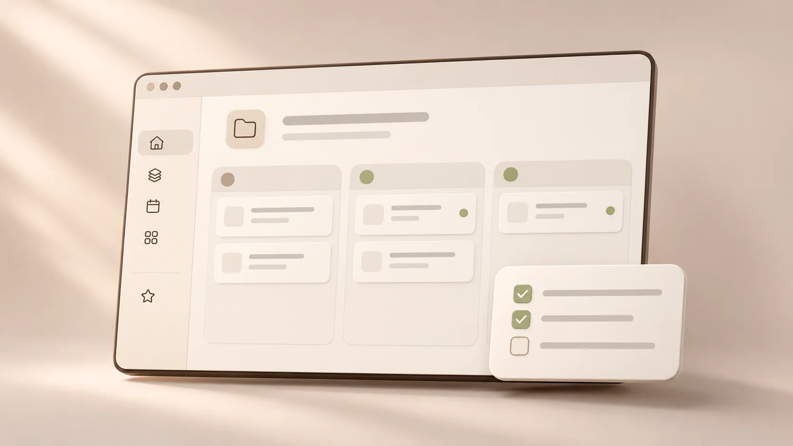

Apprends à utiliser Notion, étape par étape.
Tu n'as jamais ouvert Notion ? Parfait. En 9 modules courts, tu construis l'espace de travail d'une petite agence, et tu repars capable d'organiser le tien.

Le programme
Du plus simple au plus complet. Dans chaque leçon, tu pratiques directement dans Notion, puis un petit quiz vérifie que tu as compris.
- 01Découvrir NotionComprendre à quoi sert l'outil, te repérer dans son interface et créer ton espace d'entraînement.
- 02Pages et blocsLa brique de base de Notion : une page est faite de blocs que tu crées, déplaces et transformes.
- 03Organiser et naviguerRanger tes pages les unes dans les autres, les relier entre elles, épingler les plus utiles et retrouver n'importe laquelle avec la recherche.
- 04Bases de donnéesUne base de données réunit des éléments du même genre, comme des projets, tous décrits par les mêmes informations. Tu crées la base « Projets » de Studio Nova.
- 05Vues, filtres et trisLes mêmes informations présentées autrement : table, Kanban, calendrier, avec filtres et tris.
- 06Construire un espace proUn espace simple et bien nommé, où toute l'équipe trouve vite ce qu'elle cherche au quotidien.
- 07Partager et collaborerInviter tes collègues, choisir le bon niveau d'accès, commenter et mentionner au bon endroit.
- 08Cas pratique Studio NovaUn exercice final sans pas-à-pas : organiser le matériel de l'agence, puis comparer avec le corrigé.
- 09Questionnaire finalValider tes acquis avec quinze questions, et repartir avec une fiche mémo à imprimer.
Un espace qui se construit avec toi.
Studio Nova est une petite agence créative. Emma, Lucas et leur équipe veulent réunir leurs projets, leurs tâches et leurs notes au même endroit.
À chaque module, une nouvelle partie de leur espace apparaît. Tu construis au rythme de ce que tu apprends.
Studio Nova
- Accueil
- Projets
- Tâches
- Ressources
- Notes & réunions
Chaque leçon, en trois temps
Tu avances étape par étape, sans jamais te retrouver devant un long texte.
- 1. ComprendreLa notion expliquée simplement, avec un exemple chez Studio Nova, souvent interactif.
- 2. FaireL'exercice de la leçon : tu le fais pas à pas dans Notion, avec une capture à chaque étape importante.
- 3. VérifierUn quiz corrigé tout de suite, pour t'assurer que tu as compris.
Ressources pour aller plus loin
La formation t'a donné les bases. Pour approfondir une fonction ou garder l'essentiel sous la main, voici des ressources choisies.
La fiche mémo Notion
Les raccourcis, les commandes « / », les niveaux d'accès et les bons réflexes, sur une page A4 à imprimer.
Les ressources officielles de Notion
- Officiel · françaisCentre d'aide Notion (s'ouvre dans un nouvel onglet)La documentation officielle, en français : chaque fonction expliquée, avec des images.
- Officiel · anglaisNotion Academy (s'ouvre dans un nouvel onglet)Les cours gratuits de Notion, du niveau débutant aux usages avancés, avec des badges.
- Officiel · françaisIntroduction aux bases de données (s'ouvre dans un nouvel onglet)Pour revoir le module 4 : ce qu'est une base, ses propriétés et ses entrées.
- Officiel · françaisLes vues de base de données (s'ouvre dans un nouvel onglet)Pour approfondir le module 5 : chaque type de vue, ses réglages, ses filtres.
Des tutoriels vidéo
Ces vidéos sont faites par des créateurs indépendants. L'interface de Notion évolue : quelques boutons peuvent avoir changé de place ou de nom.
- YouTube · françaisTuto Notion simplifié : les bases en 10 minutes (s'ouvre dans un nouvel onglet)Un tour rapide de l'interface et des pages, idéal après les modules 1 à 3.
- YouTube · françaisMaîtrise les bases de données sur Notion (s'ouvre dans un nouvel onglet)Un guide complet sur les bases et leurs propriétés, pour aller plus loin que le module 4.
- YouTube · françaisLes vues des bases de données dans Notion (s'ouvre dans un nouvel onglet)Table, Kanban, calendrier, galerie : les vues en vidéo, en complément du module 5.
- YouTube · françaisAfficher une base dans plusieurs pages (s'ouvre dans un nouvel onglet)Les vues liées en vidéo, comme sur la page d'accueil du module 6.
Prêt à commencer ?
Ta progression est enregistrée sur cet appareil. Tu peux t'arrêter et reprendre quand tu veux.